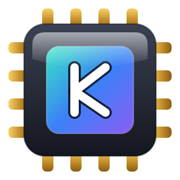
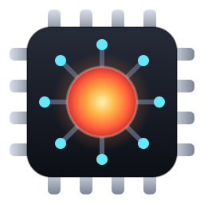
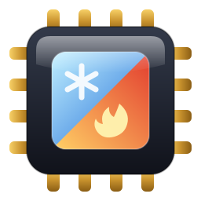
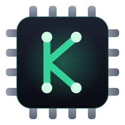

A — «Аврора»

Графитовый чип, кристалл в градиенте бирюза→фиолет, монограмма K, золотые ножки
B — «Ядро»

Тёмный чип, раскалённое ядро, дорожки к контактам — «мощность под контролем»
C — «Лёд и пламя»

Кристалл разделён по диагонали: холод (Silent Cold) и жар (Max Perfomance) — два полюса KAGO
D — «Изумрудный контур»

Минимализм: тёмный чип, K из неоновых дорожек с переходными отверстиями
Любой вариант можно докрутить (цвета, монограмма, число ножек) — исходники SVG в
assets/logo/candidates/, правка и перегонка в PNG/ICO описаны в
plans/10 §4.1. Слово за вами: буква варианта — или что поправить.